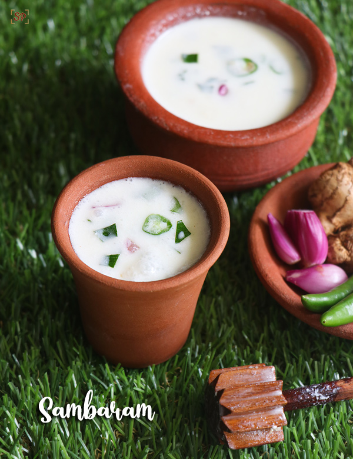

Sambaram

Description
Sambaram is a refreshing South Indian buttermilk drink, perfect for hot summer days. Made with yogurt, water,
ginger, green chilies, and curry leaves, it offers a delightful balance of tangy and spicy flavors, making it a
popular choice for cooling down and aiding digestion after meals.
Ingredients
- Yogurt (Curd, Dahi) - Use store-bought or homemade yogurt to make this beverage.
- Green chilies - Adjust according to your taste.
- Curry Leaves - They give an excellent taste and aroma to moru.
- Ginger - It gives a spicy kick.
- Variations: You can make variations of moru by adding boiled and pureed beets to make beetroot sambaram or
grated cucumbers to make cucumber sambaram.
Steps
- Whisk 1 pound (500 g) of plain yogurt using a wire whisk until it is smooth and creamy.
- Add 3 cups of water and mix well.
- Add to the bowl and mix well:
- 1 teaspoon salt
- 1 teaspoon chopped green chilies
- 15-20 curry leaves (torn into small pieces)
- 1-inch piece of ginger (julienned or chopped)
- Refrigerate for at least 1 hour before serving for the flavors to get infused.
- Tip – Strain the sambaram if you don’t like ginger and curry leaves coming into your mouth while sipping it.